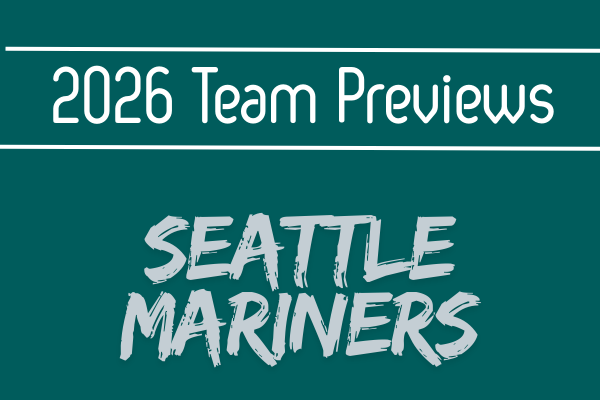

Season Preview
2026 TSDL Season Preview: Seattle Mariners
Jordan Britton's Seattle Mariners have been one of the TSDL's most compelling teams for four seasons — consistently competitive, occasionally brilliant, and perpetually on the edge of something great without quite reaching the mountaintop. The 2025…
Read Article →